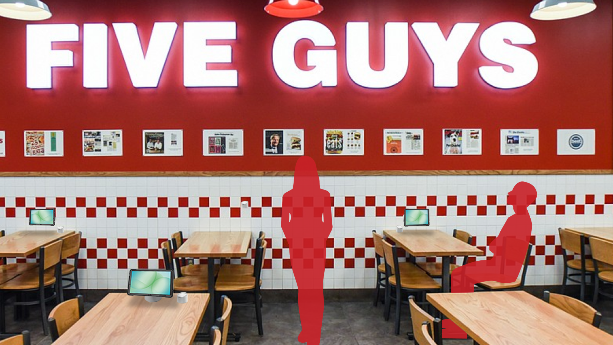
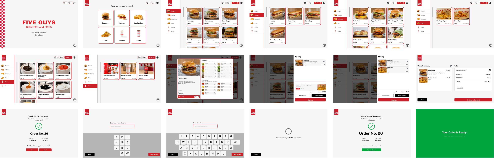
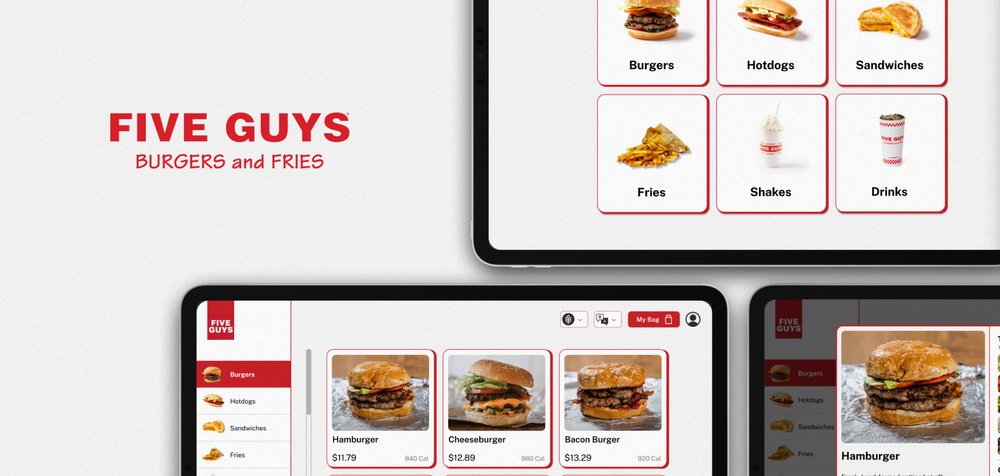

Five Guys Kiosk
Role
Sole Designer
Duration
PLACEHOLDER — e.g. 14 weeks
Disciplines
Product design · UX research
Tools
Figma · Photoshop · After Effects
ALL THE CHOICE. LESS OF THE FRICTION.
PLACEHOLDER — replace with the real writeup. A concept redesign of the in-store self-order kiosk experience, focused on faster ordering flows and clearer visual hierarchy for a high-traffic, high-distraction environment.
A BIG MENU. A CLEARER WAY THROUGH.
Choice shouldn't feel like work.
PLACEHOLDER — the research or observation that showed the existing ordering flow was overwhelming customers.
Put the customer in control.
PLACEHOLDER — the structural decisions — category navigation, customization flow, visual hierarchy — used to simplify ordering.

BUILT AROUND YOUR APPETITE.
PLACEHOLDER — a closing look at the finished kiosk UI and how it holds up against the original goal.

WHAT I'M TAKING FORWARD.
A stronger systems mindset.
This project strengthened my confidence in creating utilitarian, grid-based design systems. Five Guys' simple, bold identity allowed me to focus on functionality while developing my UX research, concepting, and product strategy skills.
Make customization more visual.
Future iterations could make ingredient selection more visual and interactive, with additional photography to better showcase freshness and create a more engaging ordering experience.